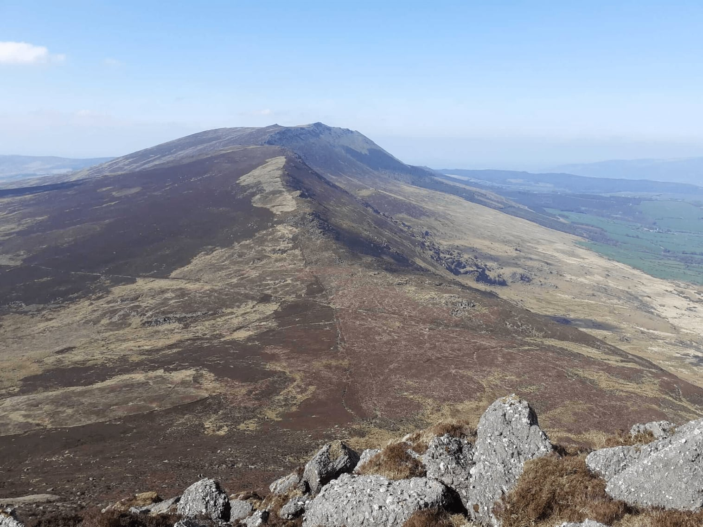
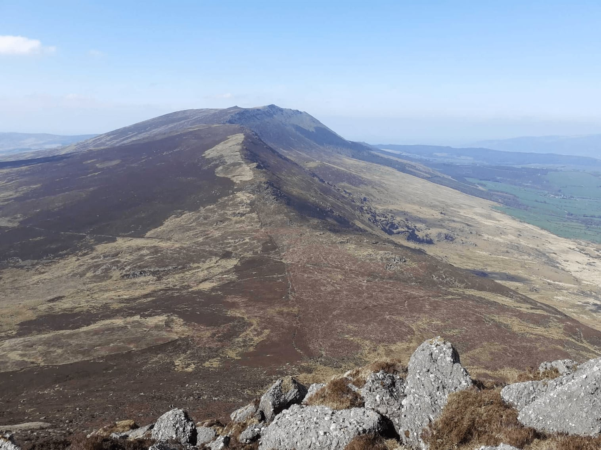
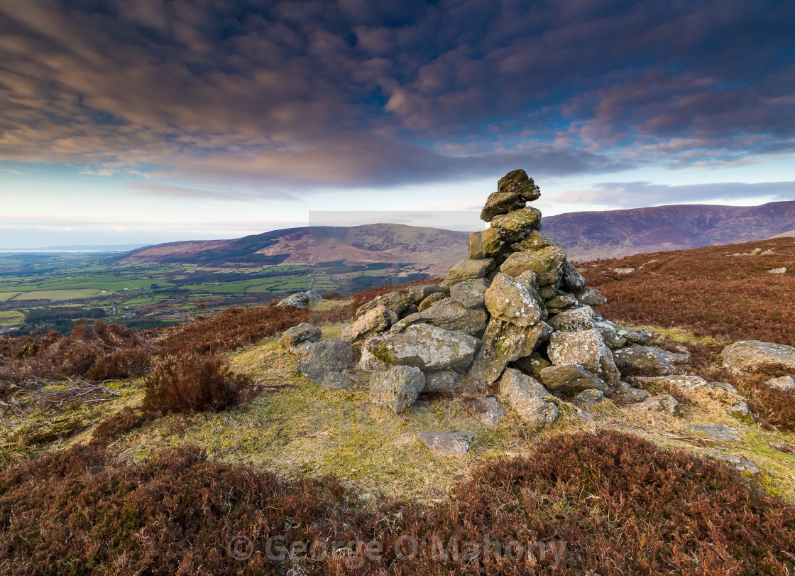
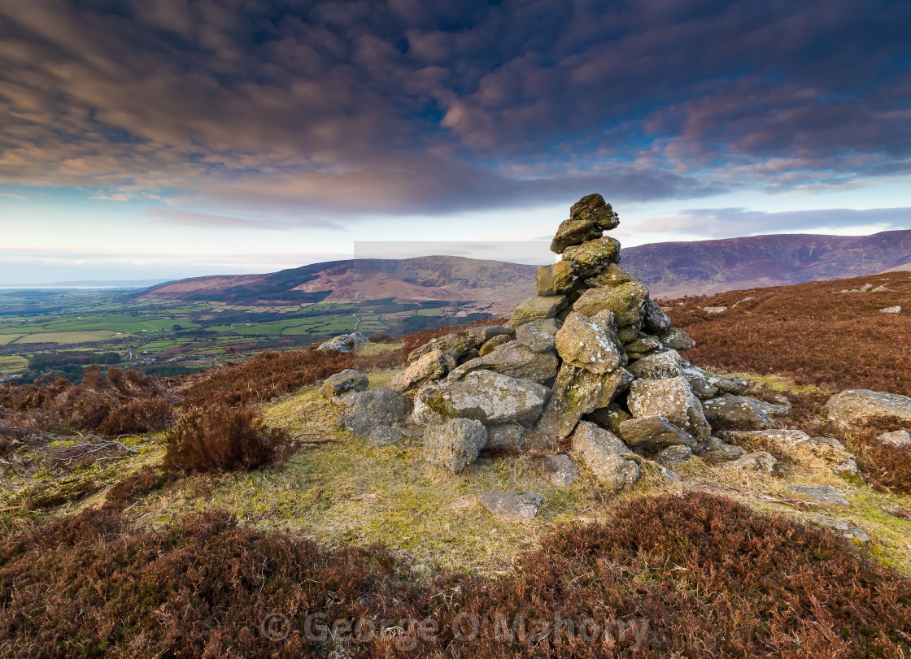
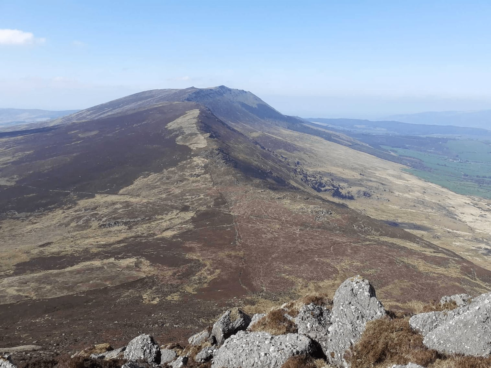
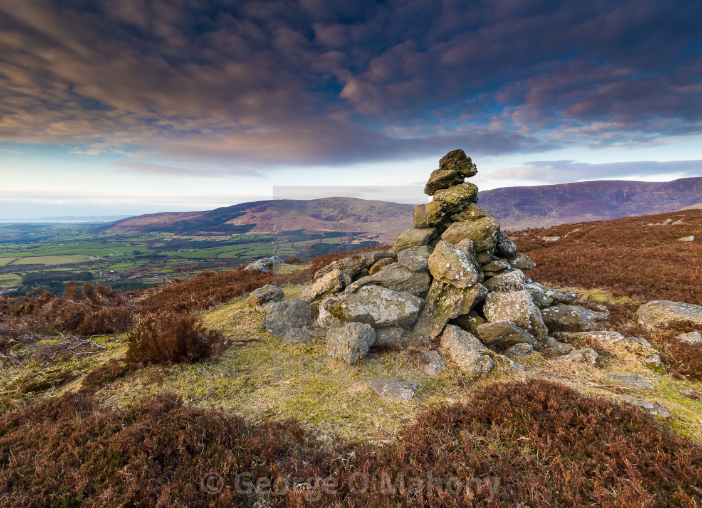

 

The Waterford Hiking Club was founded by a group of friends in 1987, with the aim of creating an enjoyable and safe atmosphere for local people to enjoy all aspects of mountaineering and hill climbing.
Since then, the club has prospered and grown, and now has a membership of around 85 people.
PLEASE NOTE: Anyone wishing to join one of our walks must contact the club secretary beforehand. Otherwise, they will not be allowed to join.
We have different grades of walks to suit hikers of all fitnesses and abilities. We're a social group that enjoys the outdoors and don't take things too seriously, outside of group safety of course! Which is always our number one priority.

